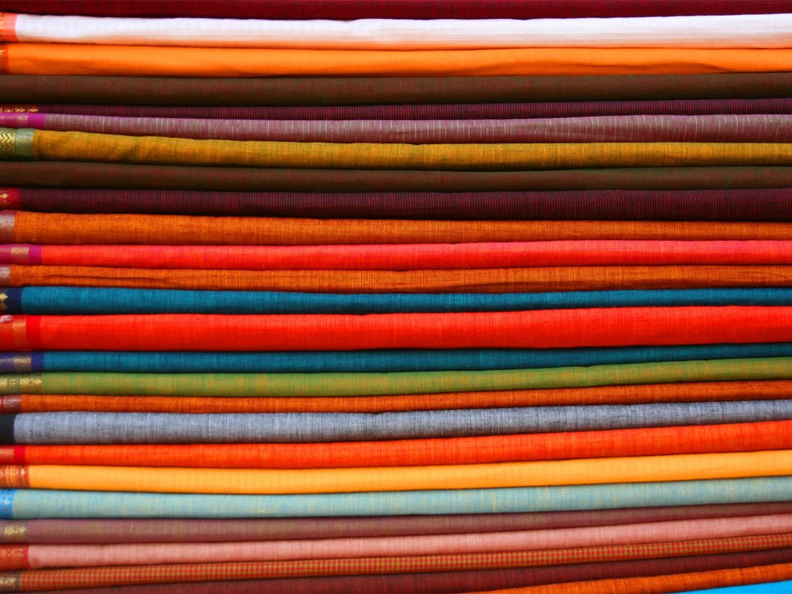
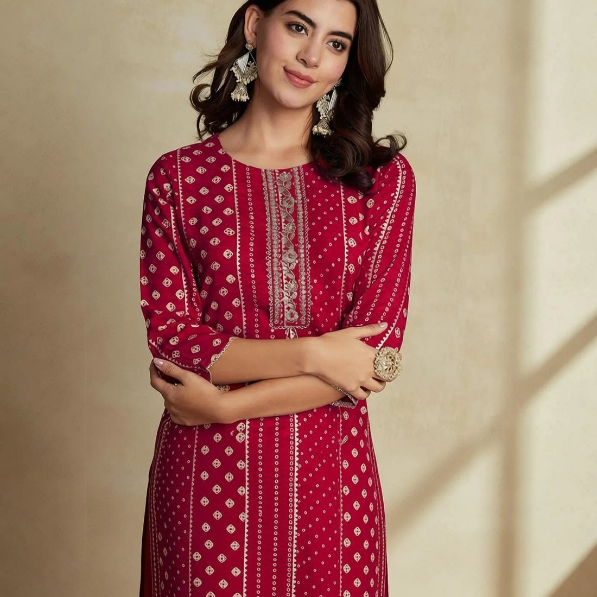
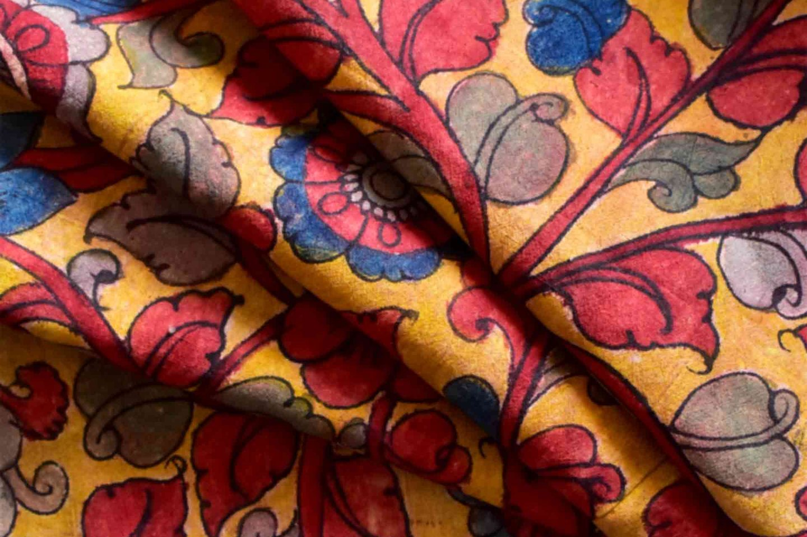
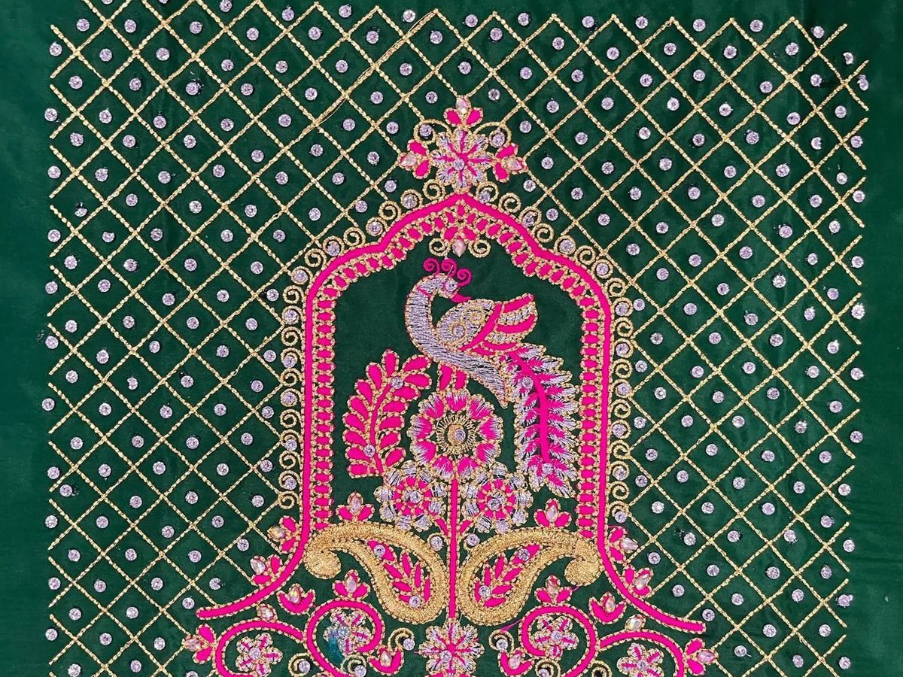
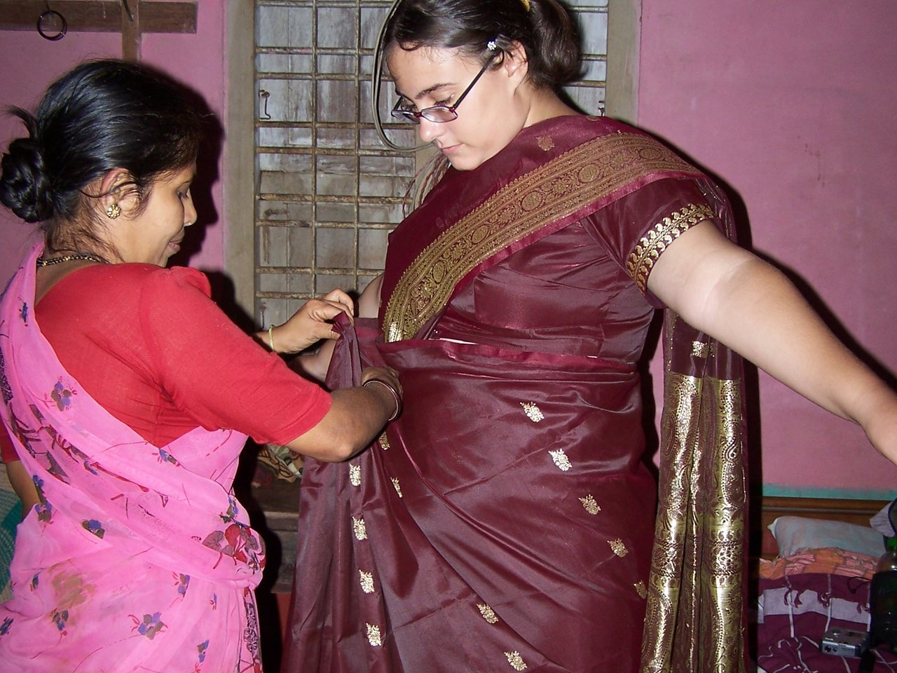

Chapter 01 · Sarees
Silk Sarees
Deep woven borders and rich, heavy silk that catches the light — the drapes our guests save for weddings and festival mornings.
- Pure silk drapes
- Temple-style woven borders
- Bridal & festival silks
Women’s ethnic wear · Weaver’s Row, Nandipur
Draping Nandipur in silk & cotton since 2011
The range
Sarees first — that is what Zarnika is known for — then everything that completes a woman’s wardrobe, all under one roof on Loomlight Avenue.
Chapter 01 · Sarees
Deep woven borders and rich, heavy silk that catches the light — the drapes our guests save for weddings and festival mornings.

Chapter 02 · Sarees
Cottons that breathe through a long summer — light, honest drapes for every day, loved by the women who wear them.
Chapter 03 · Occasions
Zarnika is a wedding-first house — bridal silks, traditional dresses and festive wear for the biggest day of the family.

Chapter 04 · Everyday
Kurtis, dress materials and printed leggings — fresh everyday styles, at prices our guests call kind to everyone.

Chapter 05 · Craft
Hand-drawn kalamkari and Riverstory Cotton dress materials — patient, traditional craft our guests ask for by name.

Chapter 06 · Finishing
Readymade blouses with a true-to-size fit, and dupattas that finish the drape — the last fold is the one everyone sees.

The store
Zarnika opened on Loomlight Avenue in 2011. More than a decade later, guests still describe it the same way — “a house where every drape is opened in full before it is chosen.” Sarees are still unfolded on the counter, one by one, the way they have always been shown — because a drape should be seen in full before it is chosen.
Why Zarnika
Not our words — the words of the women who shop here, from the guest book at our counter.
“Fair prices, written plainly on every tag.”
“The blouse fit was true to the measure we gave at the counter.”
“A calm, bright store with patient staff — and all the time in the world we needed to decide.”
“Two wedding seasons on, the silk still looks new.”
Reviews
★ 4.9 from 1,872 guest notes — here is why, in their own words.
“A wedding-first store… prices are fair and the cloth lasts. The silk and cotton sarees are worth every rupee.”
“Fairly priced clothing and accessories, a calm bright store, and staff who never rush you.”
“The freshest everyday styles in Nandipur — and prices that work for everyone.”
“Traditional dresses and kalamkari you can judge by the touch of the cloth.”
Visit
A short walk from the Pearl Arch, at the end of Weaver’s Row.
Monday – Sunday
10:00 AM – 8:30 PM
Open today 10:00 AM – 8:30 PM
Open seven days a week — walk in, and take your time with the folds.